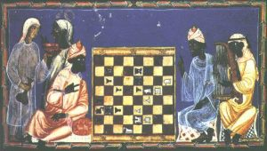
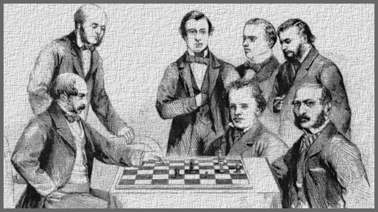
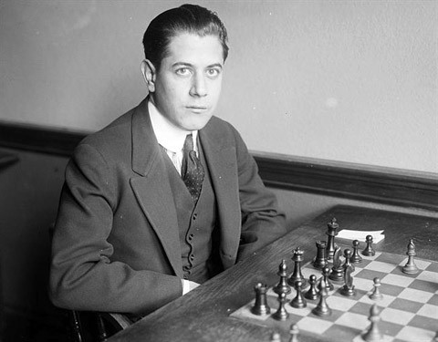

Historia szachów
Historia szachów sięga VI wieku, kiedy to gra pojawiła się w Persji, docierając do niej z Indii. W perskim utworze poetyckim powstałym na przełomie VII i VIII w. opisana została ówczesna historia szachów oraz przedstawione zasady gry. Kolejno szachy znalazły uznanie w krajach arabskich, do których trafiły po podbiciu Persów przez Arabów, a stąd rozprzestrzeniły się na Europę.
Tutaj dotarły najpierw do Hiszpanii, Włoch i Francji, następnie do Niemiec i Anglii. Kolejno zainteresowali się nimi Skandynawowie. Prawdopodobnie bezpośrednio ze Wschodu szachy przywędrowały w IX wieku do Rosji, natomiast w Polsce znane były w wieku XII. Nie wiadomo jednak nic o tym, w jaki sposób i kiedy pojawiły się na naszych ziemiach.

W Europie szczególny rozkwit szachów rozpoczął się w XVI wieku. Na wzrost zainteresowania nimi miała wpływ, poza innymi czynnikami, zmiana zasad gry zaproponowana przez włoskich szachistów w końcu XV wieku. Zmiana ta dotyczyła tylko ruchów dwóch figur, ale w istotny sposób wpłynęła na atrakcyjność gry. Hetman z najsłabszej figury-poruszającej się tylko o jedno pole na ukos-stał się najsilniejszą figurą, zwiększono też zasięg działania gońca. Mając na względzie dalsze uatrakcyjnienie gry, wprowadzono specjalne posunięcie – roszadę.
Po wprowadzeniu zmian zasad rozgrywania partii, pierwszy podręcznik gry w szachy według nowych zasad opracował Lucena w 1497 roku. Następnie w 1512 roku Damiano, w 1561 Ruy Lopez a w 1601 Alessandro Salvio wydali swoje publikacje. Pierwszy w Polsce podręcznik gry w szachy opracował na początku XVIII wieku Jan Ostroróg, jednakże nie został on opublikowany. Dopiero w 1835 roku wydano drukiem polski podręcznik gry w szachy, którego autorem był Kazimierz Krupski.
Za pierwszy oficjalny mecz o tytuł mistrza uważa się ten rozegrany w 1886 roku, w którym Wilhelm Steinitz pokonał Johannesa Zukertorta. W XIX i w pierwszej połowie XX wieku mecze mistrzowskie odbywały się według bardzo nieformalnych zasad. Szachista, który uważał się za silniejszego od aktualnego mistrza świata, po prostu wyzywał go na szachowy pojedynek. Nie istniał formalny system kwalifikacji. Zasady rozgrywania meczów nie były sztywno ustalone i stawały się przedmiotem czasami bardzo trudnych negocjacji, w których decydujący głos miał zazwyczaj aktualny mistrz świata. Z tego powodu niektórzy wybitni szachiści (m.in. najwybitniejszy polski arcymistrz Akiba Rubinstein), którzy aspirowali do tytułu mistrza, takiej szansy byli pozbawieni. Niemniej powszechnie uważa się, że nieformalny system działał skutecznie i wyłaniał mistrzów, którzy rzeczywiście byli najsilniejszymi graczami swoich czasów.

Mistrzami świata w tym systemie byli, poza Wilhelmem Steinitzem, czterej jeszcze szachiści. Niemiec Emanuel Lasker zachował tytuł najdłużej w historii, przez 27 lat (1894-1921), wielokrotnie go broniąc. Pokonał go Kubańczyk Jose Raul Capablanca: będący w złej dyspozycji Lasker poddał mecz o mistrzostwo, w którym Capablanca wysoko prowadził. Po zdobyciu mistrzostwa Capablanca nie chciał rozgrywać meczów w obronie tytułu. Przez sześć lat żądał od potencjalnych przeciwników (często uważanych za silniejszych od niego, jak Aron Nimzowitsch czy Akiba Rubinstein) tak wysokich stawek za grę, aby nikogo nie było na nie stać; mawiano, że od rywali odgradzał się "Złotym Wałem". Jednak w 1927 r. rosyjski emigrant, obywatel Francji Aleksandr Alechin zebrał żądaną kwotę, doprowadził do meczu i po dramatycznej walce zwyciężył: Capablanca przegrał więc swój jedyny mistrzowski mecz. Alechin rozgrywał mecze w obronie tytułu i w 1935 r. pokonał go Holender Max Euwe, pierwszy amator, który był mistrzem świata (nie żył z gry w szachy, był nauczycielem matematyki). Utrzymał on tytuł tylko przez nieco ponad rok, gdyż w 1937 r. Alechin wyzwał go na mecz rewanżowy i wygrał. Później mecze o tytuł uniemożliwiła II wojna światowa, a w marcu 1946 r. 53-letni wówczas Alechin niespodziewanie zmarł.

Śmierć Aleksandra Alechina stanowiła wyłom w działającym dotychczas systemie, ponieważ po raz pierwszy zabrakło mistrza, którego można było pokonać w bezpośrednim meczu. Dwa lata później Międzynarodowa Federacja Szachowa (FIDE) zorganizowała turniej pretendentów, w którym wzięło udział pięciu najsilniejszych szachistów: Michaił Botwinnik, Max Euwe, Paul Keres, Samuel Reshevsky i Wasilij Smysłow. Zwycięzcą turnieju został Botwinnik, który tym samym został kolejnym mistrzem świata, rozpoczynając hegemonię szachistów ze Związku Sowieckiego.
Szachowa dominacja ZSRS trwała do 1972 r., kiedy to Bobby fischer w "meczu stulecia" pokonał Boris Spasskiego (więcej o tym wydarzeniu)